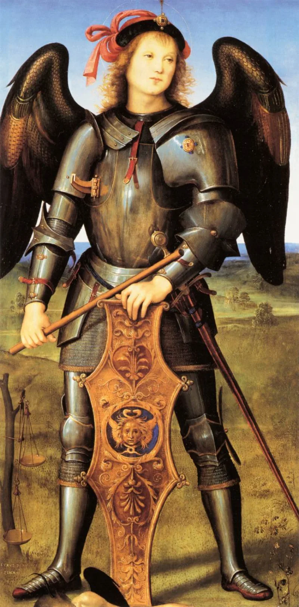
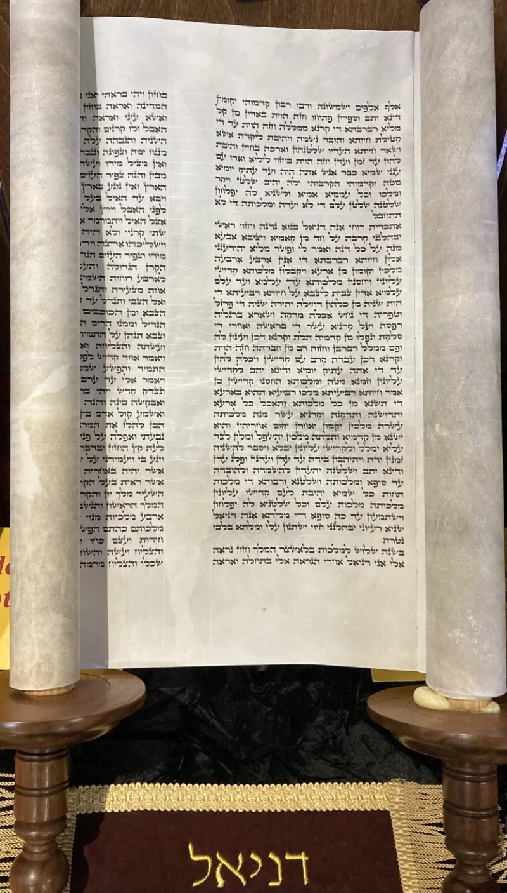

No good counter-argument has been published by the Watchtower.
The Watchtower teaches that Jesus Christ is Michael the archangel. That means he is a created angel, before his human life and after his resurrection.
This is current, official teaching. The Watchtower of April 1, 2010 (p.
19) states it flatly. Their encyclopedia, Insight on the Scriptures (1988, Vol.
2, p. 393), says Michael is none other than Jesus Christ.
The support offered is thin. It is 1 Thessalonians 4:16, where Jesus descends with an archangel's voice.
The rest is inference from Daniel and Revelation. No verse anywhere names Jesus as Michael.
If Jesus comes with an archangel's voice, perhaps he is the archangel. The word archangel is always singular in Scripture, and only Michael carries the title.
In Revelation 12:7 Michael leads heaven's armies, and in Revelation 19 Jesus does. So they may be the same commander.
And Hebrews 1, they say, contrasts Jesus with ordinary angels, not with his own rank as chief angel.
Hebrews 1:5-13 was written to separate the Son from angels. Verse 5 asks which of the angels God ever called his Son.
Verse 6 says "let all God's angels worship him." Angels are called ministers, but of the Son it says "your throne, O God, is forever." If the Son is set against angels as a class, he is not the chief one. And on their own rules, angels worshipping a creature would be idolatry.
Strong for you. They admit the doctrine, and no Watchtower answer deals with the Hebrews 1 contrast.
The whole identification is inference stacked on inference.
"Could you show me the verse that says Jesus is Michael? Not one that hints at it, one that says it."


Jesus comes with an archangel's voice, and only Michael carries that one title.
Witnesses argue from 1 Thessalonians 4:16. Jesus descends with an archangel's voice, which implies that he is the archangel. They note that 'archangel' is only ever singular in Scripture, and that only Michael bears the title.
Michael leads the angelic armies in Revelation 12:7. Revelation 19 shows Jesus leading heaven's armies. So they are the same commander. And they hold that Hebrews 1 contrasts Jesus with ordinary angels. It does not contrast him with his own rank as chief angel.
Strong for you. No verse anywhere says Jesus is Michael.
The doctrine itself is admitted, since it is current official teaching. The criticism stands unanswered. No text says Jesus is Michael. The whole case is inference.
Hebrews 1:5-13 sets the Son against angels as a class. The Witness reading cannot absorb that. The Father commands all angels to worship the Son. On Watchtower rules, that would be idolatry.